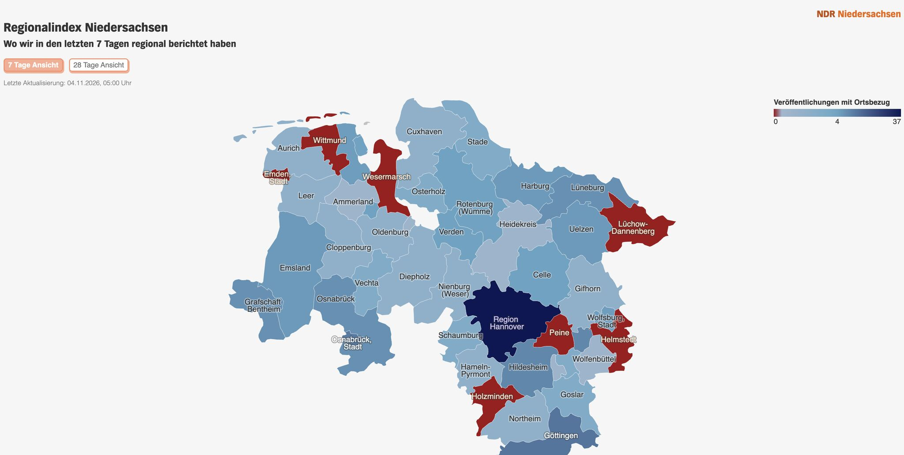

Der Regionalindex: Wo berichtet das Land über sich selbst?

- Problem
- Eine Landesfunkhaus-Redaktion weiß nicht systematisch, über welche Orte sie eigentlich berichtet – Regionalität blieb Bauchgefühl.
- Was gebaut wurde
- Eine Pipeline, die veröffentlichte Artikel automatisch auswertet: KI-Extraktion von Ortsbezügen, Abgleich mit einer Referenz-Gemeindedatenbank, Zählung je Landkreis, Visualisierung als interaktive Karte, nächtliche Aktualisierung bei Änderungen.
- Rollen
- Idee und Anforderungsmanagement: Patrick Weinhold, Programmmanager NDR Landesfunkhaus Niedersachsen. Konzept, Datenmodell, Extraktionslogik, Automatisierung: ich.
- Ergebnis
- Offizieller Start am 12.11.2026; die Auswertung läuft seit Anfang Oktober und findet seither täglich rund 100 neue Ortsbezüge je Artikelbestand – jeder mit vollständiger Metadaten-Spur (Fundstelle im Artikel, Ortstyp, Begründung der Zuordnung), die aggregiert als Karte der 38 Landkreise und 8 kreisfreien Städte Niedersachsens im 7- und 28-Tage-Fenster dasteht. Nach dem Launch: hausweite Teilung durch die NDR-Kommunikation, Anfragen mehrerer Landesfunkhäuser und Hauptredaktionen.
- Stand
- In Betrieb beim NDR; Rollout über weitere Bereiche wird dort geprüft. Ich bin nicht mehr beteiligt – die Übergabe ist dokumentiert.
- Was man sehen kann
- Die Karte oben: reale Auswertung, 7-Tage-Ansicht.